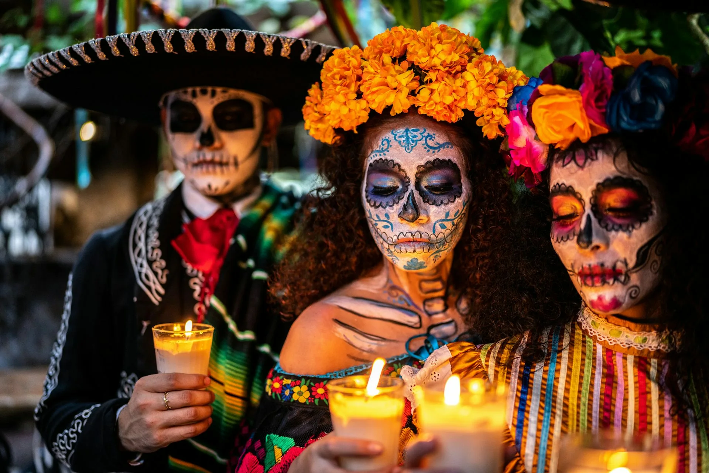

Унылая пора! Очей очарованье!
Приятна мне твоя прощальная краса —
Люблю я пышное природы увяданье,
В багрец и в золото одетые леса,
В их сенях ветра шум и свежее дыханье,
И мглой волнистою покрыты небеса,
И редкий солнца луч, и первые морозы,
И отдаленные седой зимы угрозы.
| сентябрь | 30 |
| октябрь | 31 |
| ноябрь | 30 |
